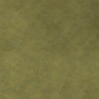
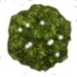

Civilization V (
Community Patch/Vox Populi
) Replay Viewer
Messages
New cities
City transfers
City razings
Pantheons
Religions
Tile claims
MIT License.
John Chen (2025)
. Based on Alex Webb's
civ5replay
. Most artwork and designs were done by
Firaxis
and originated from their game
Civilization V
. Special thanks to
the Vox Populi Team
, which keeps Civ V alive to this date.